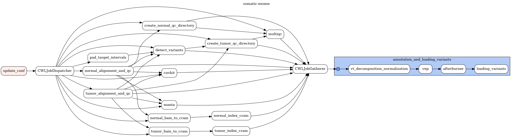
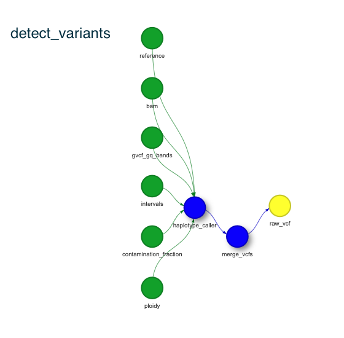

Pipelines overview¶
somatic-exome¶
Description¶
Somatic exome workflow based on mgi-somatic-exome.
Introduction¶
Somatic_exome is designed to perform processing of mutant/wildtype H.sapiens exome sequencing data. It features BQSR corrected alignments, 4 caller variant detection, and vep style annotations. Structural variants are detected via manta and cnvkit. In addition QC metrics are run, including somalier concordance metrics.
Alignment and QC step¶
Pipeline starts with either fastq files or unaligned BAM files with necessary metadata describing analysis type, sample name, gender, distinction between tumor and normal.
This step is performed seperately for normal and tumor sample.

Used tools:
bwa_mem 0.7.15 - for sequence alignment step using GRCh38 reference
samblaster 0.1.24 - for adding mate tags
flexbar 3.5 - for bar and adapter removal
picard:2.23.6 for alignment metrics
samtools 1.11–h6270b1f_0 for BAM indexing and flagstat operation
picard 2.18.1 - for bedtointervals operation
gatk 4.1.8.1 for Select Variants
verifyBamId v1.1.3 - for checking whether the reads are contaminated as a mixture of two samples
fastqc - for bam QC report
qualimap - for bam QC report
multiqc - QC
Detect variants step¶
This step is performed for normal and tumor sample at once. Once variants are standardized they are annotated with metadata collected and published by public databases. In the afterburner step final postprocessing is performed including generating URLs to external databases and extracting genotype information from INFO field.
Used tools:
mutect 2 - for somatic variants detection
strelka 2.9.9 - for somatic variants (SNPs and indels) detection
varscan 2.4.2 - for somatic variants detection
manta 1.6.0 - for somatic structural variants detection
cnvkit 0.9.8 - for copy number variants detection
vt 0.57721–hf74b74d_1 - for normalization and decomposition
bcftools 1.12 - for vcf manipulations (merging, renaming samples)
samtools 1.11 - for indexing and sanitizing BAM files (removing mutect-specific format tags, removing non ACTGN bases)
gatk 4.1.8.1 - for DOCM variants detection and selecting, filtering variants
bcftools - QC for detected variants
Input parameters¶
sample_input.json
{
"design": "SSV6",
"flowcell_id": "JHDAXCKJDLSK",
"gender": "M",
"is_test": "_tests",
"normal_fastq1_path": "cwl_inputs_folder/somatic-exome_tests/SRR7890845_chr17_test1_R1.fastq.gz",
"normal_fastq2_path": "cwl_inputs_folder/somatic-exome_tests/SRR7890845_chr17_test1_R2.fastq.gz",
"normal_sample_id": "normal_test_SID",
"patient_id": "somatic_test_PID",
"phenotype": "proband",
"template_path": "dags/cwl/configurations/templates/somatic_exome_template.yaml",
"tumor_fastq1_path": "cwl_inputs_folder/somatic-exome_tests/SRR7890844_chr17_test1_R1.fastq.gz",
"tumor_fastq2_path": "cwl_inputs_folder/somatic-exome_tests/SRR7890844_chr17_test1_R2.fastq.gz",
"tumor_sample_id": "tumor_test_SID"
}
Sample REST API call¶
curl -v -g -X POST \
http://localhost:8080/api/v1/dags/somatic-exome/dagRuns \
-H 'Cache-Control: no-cache' \
-H 'Content-Type: application/json' \
-d "{'conf':\'$(cat sample_input.json | sed 's/\"/\\"/g')\'}"
Sample Airflow cli invocation¶
airflow dags trigger \
-c "$(cat sample_input.json)" \
-r dag_run-1 somatic-exome